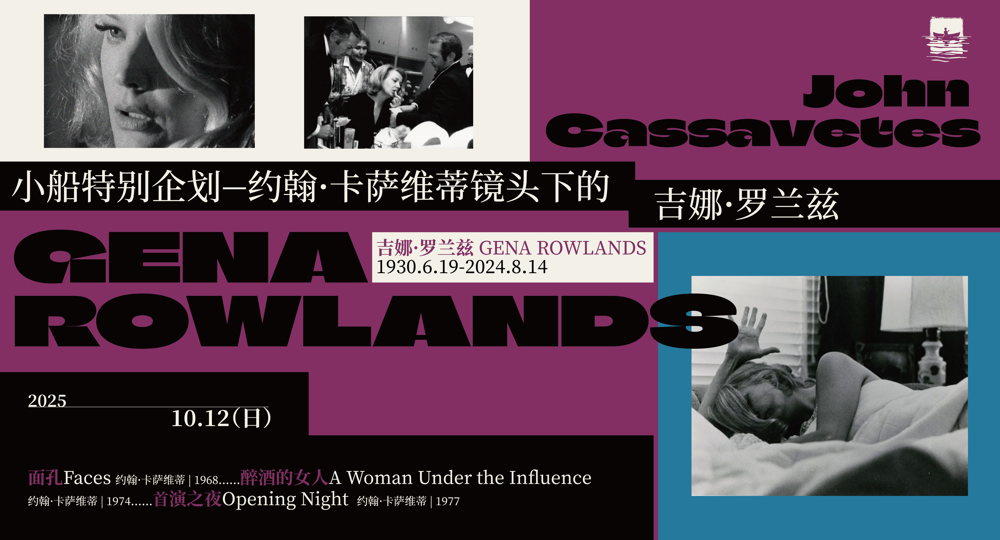

< Back to Screening
Gena Rowlands through the Lens of John Cassavetes
This triple feature celebrates one of cinema's most extraordinary collaborations: director John Cassavetes and actress Gena Rowlands. In Faces, Rowlands electrifies a portrait of marital disintegration; Opening Night finds her as an actress unraveling under the pressure of performance and aging; and A Woman Under the Influence delivers a shattering study of a wife and mother pushed to her psychological limits.

For any research or screening-related request, you can contact us at:
yangtao0410@gmail.com
tikicai03@gmail.com